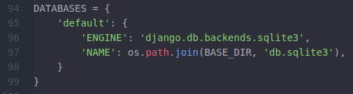
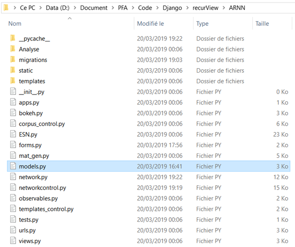
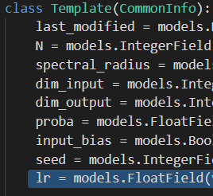
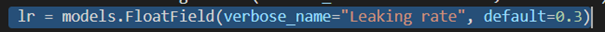
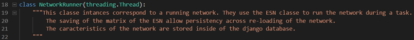
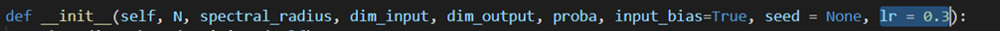
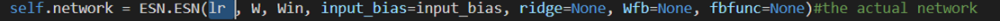

The urls, views and forms are implemented in Python file associated in directory ARNN. The Html views can be found in directory templates.
The chosen relational database management system is SQLite. It is set in settings.py.
The database includes the networks, the corpuses, the templates and the tasks the networks do. The tables can be seen in models.py. If data is needed to be added in the database, type python3 manage.py makemigrations –empty ARNN in directory recurView, the same one containing manage.py. Then, the create file in directory migrations should be edited to add data, take migration 0014 as an example.
The implementation of the project is based on the Model-View-Controller (MVC) management so that each implemented database table is associated to a file implementing the controller. For example, there are file nework.py and file networkcontrol.py.
An “observable” is a network data we can see on the GUI manage by Bokeh. For instance, the user can observe the variation between the expected result and what the network gives as output. If an “observable” is needed to be added, then define a function in file observables.py.
An “observable” is displayed when it is added on the loaded network. It runs on the AJAX concept, as a consequence the graphs are dinamically plotted, see the Useful links for an explanation of the notion. Refer to the make_ajax_plot function in bokeh.py and file index.html concerning form observable_form in the script.
Futhermore, the data is persistent even if the server crashes thanks to the management of forms observable_form and task_form in the script of file index.html : location.reload() is called so that if the page is reloaded, it is carried out from the navigator cache.
A network is managed by class NetworkRunner found in network.py. The class corresponds to a layer containing the tank of neurons corresponding to class ESN. The caracteristics of the network are stored inside the database. If you want to see a complete description, go to Module Index and select ARNN.network module.
If a new network option should be added, this could be done following some steps. In the first place, you will need to stop the server in order to apply the update. The first modification you will have to do in order to add your option is to go to the DjangorecurViewARNN directory, where you have installed the web app. Open file models.py.
There, you will find the declaration of the class Template. In order to add a new option, add a new field to the class, it must be set equal to a Django model’s field. The field must correspond to the type of the parameter you want to add, for more information see the Useful links.
The verbose name is the name that is going to be displayed in the form on the website and is therefore not important.
You have to add a default value to your new field, chose it so that the behaviour of your networks will not change afterwise.
Now that the field have been added to the Template model, it is time to add this new parameter to the code. In order to do so, open file network.py to found class NetworkRunner.
In order for your new parameter to be considered, you will have to add a new parameter to the function __init__, with the exact same name and default than in class Template.
Then you can use your new parameter to do whatever you want, for exemple, changing the way the matrix of the ESN are generated. Below, a way to specify the leaking rate was added.
« Developer Guide :: Contents :: ARNN package »